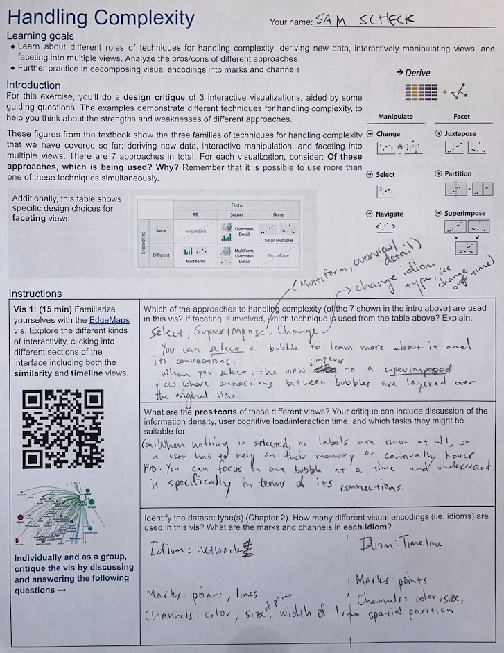
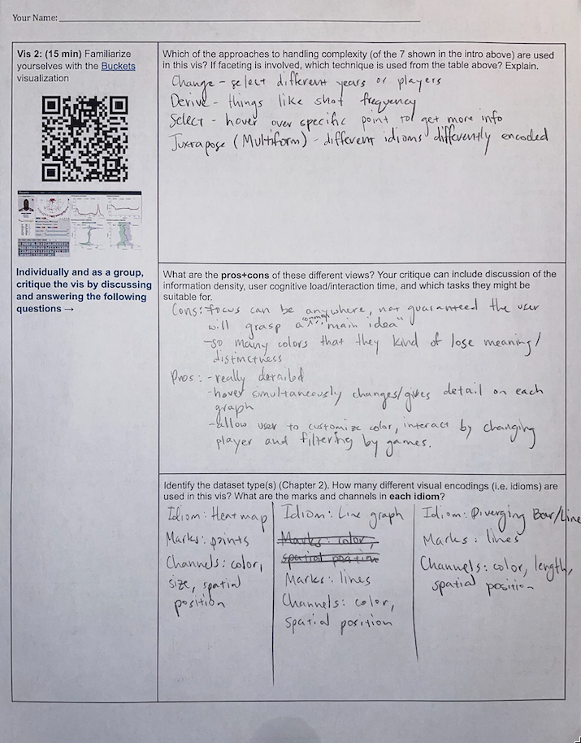
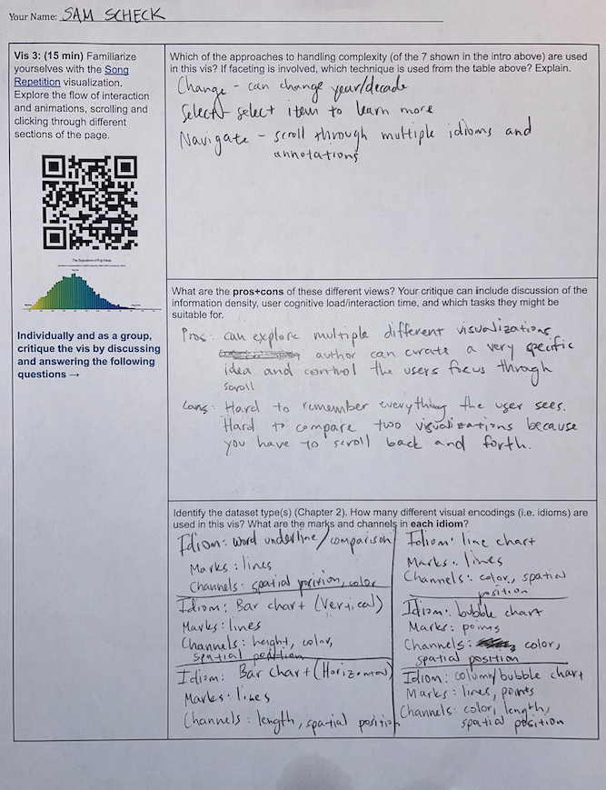
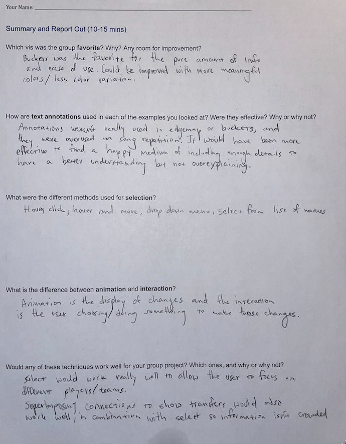

1 / 4

2 / 4

3 / 4

4 / 4


|

|

|
I chose this item to reflect on because I think it showcases the themes of the class that I liked so much. The nuances of data visualization
helps the author create a viz that the user can understand, or a viz that handles the complexity of the data for the user.
This assignment helped
me to get some more exposure to complex/ambitious visualizations. It was the first time I was seeing and analyzing more than just a trivial viz.
It helped me to imagine what else was possible in terms of visualizing complex data. For example, I really like the visualization that had to do
with basketball. The juxtaposed views and interaction are seamless. I especially liked that the interaction affected each juxtaposed view, as they
were all representations of the same spatial data.
Outside of class, this activity helped me understand that research about the possibilities of
a concept is super important to do before assuming you already know the depth of what you are trying to do. In addition on a more practical note,
now I know so much more about the possibilities of vizes I could make after having so much more of an interest in data visualization taking this class.